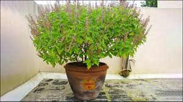

Tulsi (Holy Basil)
Scientific Name: Ocimum tenuiflorum
Description: Tulsi, often referred to as the "Queen of Herbs," is a sacred plant in Indian culture and Ayurveda. It is highly valued for its medicinal properties and spiritual significance. The aromatic leaves are used for herbal remedies, teas, and in religious rituals. Tulsi plants purify the surroundings and symbolize purity and health.
Care Tips:
- Water: Needs regular watering but avoid overwatering.
- Light: Prefers full sunlight for at least 6 hours daily.
- Temperature: Grows best in warm temperatures, around 20°C to 35°C.
- Soil: Well-drained, nutrient-rich soil with good aeration is ideal.
Medicinal Uses:
Tulsi is widely used to treat respiratory issues, reduce stress, boost immunity, and promote longevity. Its leaves have antibacterial, antifungal, and anti-inflammatory properties, making it a powerhouse in natural medicine.